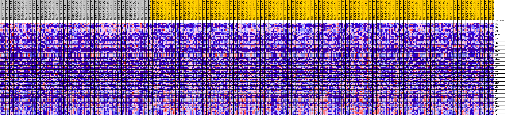
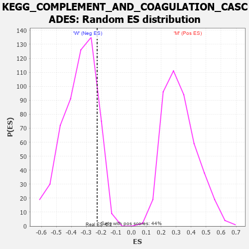

Profile of the Running ES Score & Positions of GeneSet Members on the Rank Ordered List
| Dataset | MUC16.MUC16.cls#M_versus_W.MUC16.cls#M_versus_W_repos |
| Phenotype | MUC16.cls#M_versus_W_repos |
| Upregulated in class | W |
| GeneSet | KEGG_COMPLEMENT_AND_COAGULATION_CASCADES |
| Enrichment Score (ES) | -0.22755295 |
| Normalized Enrichment Score (NES) | -0.65525466 |
| Nominal p-value | 0.8689408 |
| FDR q-value | 0.99541414 |
| FWER p-Value | 1.0 |
| PROBE | DESCRIPTION (from dataset) | GENE SYMBOL | GENE_TITLE | RANK IN GENE LIST | RANK METRIC SCORE | RUNNING ES | CORE ENRICHMENT | |
|---|---|---|---|---|---|---|---|---|
| 1 | F12 | na | 58 | 0.245 | 0.0453 | No | ||
| 2 | CD55 | na | 74 | 0.239 | 0.0901 | No | ||
| 3 | C8G | na | 601 | 0.173 | 0.1132 | No | ||
| 4 | C4BPB | na | 822 | 0.159 | 0.1393 | No | ||
| 5 | CD46 | na | 1374 | 0.135 | 0.1549 | No | ||
| 6 | PLAUR | na | 2135 | 0.113 | 0.1625 | No | ||
| 7 | C5AR1 | na | 3949 | 0.083 | 0.1452 | No | ||
| 8 | F3 | na | 6143 | 0.057 | 0.1163 | No | ||
| 9 | SERPINA5 | na | 6213 | 0.057 | 0.1258 | No | ||
| 10 | C5 | na | 6907 | 0.050 | 0.1226 | No | ||
| 11 | CR2 | na | 7219 | 0.047 | 0.1259 | No | ||
| 12 | F13A1 | na | 9617 | 0.028 | 0.0877 | No | ||
| 13 | FGA | na | 9919 | 0.025 | 0.0871 | No | ||
| 14 | F10 | na | 10125 | 0.024 | 0.0879 | No | ||
| 15 | TFPI | na | 10474 | 0.021 | 0.0856 | No | ||
| 16 | KLKB1 | na | 10602 | 0.020 | 0.0871 | No | ||
| 17 | FGG | na | 10745 | 0.019 | 0.0882 | No | ||
| 18 | BDKRB2 | na | 11196 | 0.016 | 0.0832 | No | ||
| 19 | CR1 | na | 11906 | 0.012 | 0.0725 | No | ||
| 20 | FGB | na | 11925 | 0.012 | 0.0744 | No | ||
| 21 | SERPIND1 | na | 12078 | 0.010 | 0.0736 | No | ||
| 22 | C4BPA | na | 12113 | 0.010 | 0.0749 | No | ||
| 23 | PLAU | na | 12644 | 0.007 | 0.0666 | No | ||
| 24 | C1QB | na | 13360 | 0.002 | 0.0541 | No | ||
| 25 | C1QC | na | 16165 | -0.006 | 0.0044 | No | ||
| 26 | C1QA | na | 16294 | -0.007 | 0.0033 | No | ||
| 27 | C8B | na | 17254 | -0.012 | -0.0119 | No | ||
| 28 | SERPINE1 | na | 17852 | -0.015 | -0.0199 | No | ||
| 29 | CFD | na | 18460 | -0.018 | -0.0275 | No | ||
| 30 | F7 | na | 18574 | -0.018 | -0.0260 | No | ||
| 31 | SERPINF2 | na | 18748 | -0.019 | -0.0255 | No | ||
| 32 | F5 | na | 18953 | -0.020 | -0.0254 | No | ||
| 33 | C3AR1 | na | 19085 | -0.021 | -0.0238 | No | ||
| 34 | F11 | na | 19489 | -0.023 | -0.0268 | No | ||
| 35 | F2 | na | 24265 | -0.043 | -0.1051 | No | ||
| 36 | C2 | na | 24266 | -0.043 | -0.0969 | No | ||
| 37 | F13B | na | 24873 | -0.046 | -0.0993 | No | ||
| 38 | C8A | na | 24933 | -0.046 | -0.0917 | No | ||
| 39 | PROS1 | na | 24976 | -0.046 | -0.0837 | No | ||
| 40 | C6 | na | 25369 | -0.048 | -0.0818 | No | ||
| 41 | SERPINA1 | na | 25589 | -0.048 | -0.0767 | No | ||
| 42 | CFI | na | 26006 | -0.050 | -0.0747 | No | ||
| 43 | KNG1 | na | 27111 | -0.054 | -0.0845 | No | ||
| 44 | VWF | na | 28070 | -0.058 | -0.0910 | No | ||
| 45 | SERPINC1 | na | 29125 | -0.061 | -0.0986 | No | ||
| 46 | BDKRB1 | na | 29709 | -0.063 | -0.0972 | No | ||
| 47 | PROC | na | 30872 | -0.067 | -0.1057 | No | ||
| 48 | CPB2 | na | 33520 | -0.075 | -0.1394 | No | ||
| 49 | MASP2 | na | 34801 | -0.079 | -0.1476 | No | ||
| 50 | MASP1 | na | 34970 | -0.080 | -0.1356 | No | ||
| 51 | CFB | na | 35042 | -0.080 | -0.1218 | No | ||
| 52 | CFH | na | 36225 | -0.083 | -0.1275 | No | ||
| 53 | CD59 | na | 37867 | -0.088 | -0.1405 | No | ||
| 54 | C3 | na | 40302 | -0.097 | -0.1664 | No | ||
| 55 | F9 | na | 42448 | -0.104 | -0.1856 | No | ||
| 56 | C7 | na | 43649 | -0.108 | -0.1868 | No | ||
| 57 | THBD | na | 44799 | -0.113 | -0.1864 | No | ||
| 58 | C1S | na | 45153 | -0.114 | -0.1712 | No | ||
| 59 | C1R | na | 48264 | -0.129 | -0.2032 | Yes | ||
| 60 | PLG | na | 48750 | -0.132 | -0.1871 | Yes | ||
| 61 | MBL2 | na | 49099 | -0.134 | -0.1682 | Yes | ||
| 62 | F2R | na | 50380 | -0.142 | -0.1645 | Yes | ||
| 63 | SERPING1 | na | 51678 | -0.154 | -0.1590 | Yes | ||
| 64 | C9 | na | 53497 | -0.179 | -0.1581 | Yes | ||
| 65 | PLAT | na | 53514 | -0.180 | -0.1244 | Yes | ||
| 66 | A2M | na | 53601 | -0.181 | -0.0917 | Yes | ||
| 67 | C4A | na | 54005 | -0.192 | -0.0628 | Yes | ||
| 68 | F8 | na | 54364 | -0.202 | -0.0310 | Yes | ||
| 69 | C4B | na | 55132 | -0.251 | 0.0024 | Yes |

